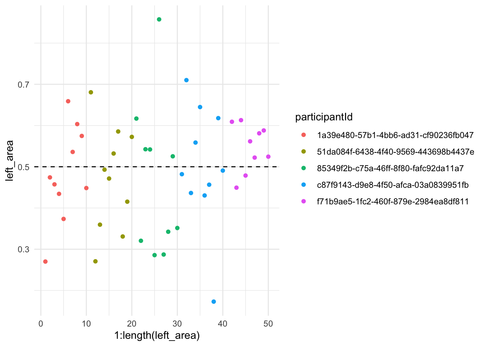
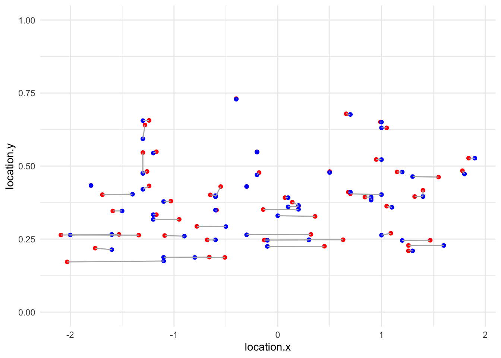
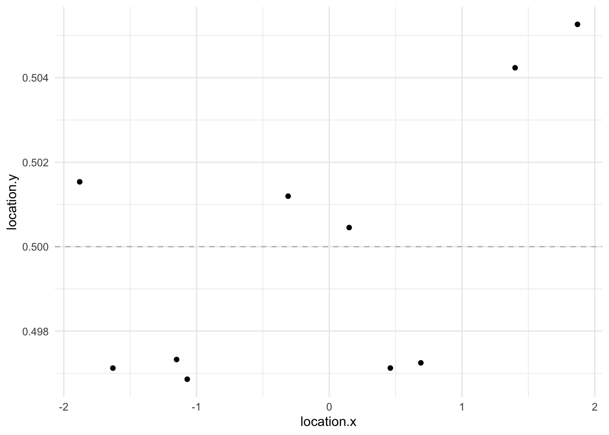
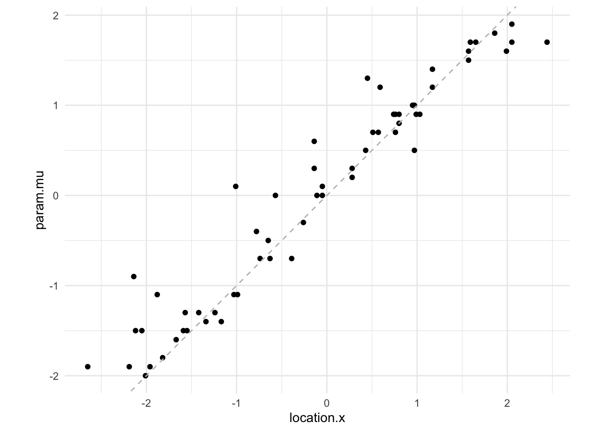
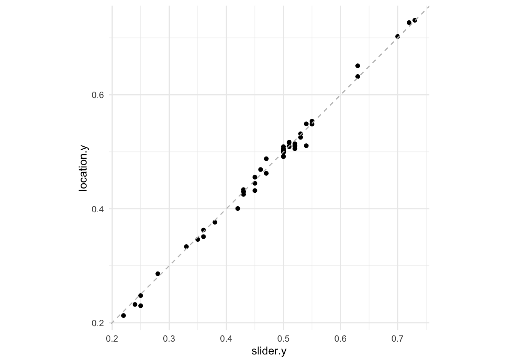

Code
df <- read.csv("vis-decode-slider_all_tidy.csv") %>% as_tibble(.)Let first read in the file.
df <- read.csv("vis-decode-slider_all_tidy.csv") %>% as_tibble(.)So far the only one that we have gone through1 is the one with participantId 81860d3f-e08a-4235-a16c-055754fe1d7f. And that’s what we are going to filter for. Let’s just see the simplest two columns.
df %>% # filter(participantId == "63fd0160-9f56-4443-9c64-6adcbbfd81cf") %>%
filter(grepl("task", trialId)) %>%
filter(grepl("test", trialId)) %>%
filter(!grepl("task5", trialId)) %>% # we will analyze task 5 separately ...
select(participantId, trialId, responseId, answer) %>%
mutate(answer = as.numeric(answer)) %>%
pivot_wider(names_from = responseId, values_from = answer, names_repair = "universal") %>%
separate_wider_delim(trialId, delim="_", names = c("TaskType", "type", "id")) %>%
select(-type, -pixel.x, -pixel.y) -> task_dfNew names:
• `location-x` -> `location.x`
• `location-y` -> `location.y`
• `pixel-x` -> `pixel.x`
• `pixel-y` -> `pixel.y`
• `param-mu` -> `param.mu`
• `param-sigma` -> `param.sigma`
• `param-lambda` -> `param.lambda`
• `param-p` -> `param.p`
• `param-q` -> `param.q`task_df# A tibble: 80 × 10
participantId TaskType id location.x location.y param.mu param.sigma
<chr> <chr> <chr> <dbl> <dbl> <dbl> <dbl>
1 1a39e480-57b1-4bb6… task2 1 -0.68 0.247 -0.6 1.3
2 1a39e480-57b1-4bb6… task2 2 0.95 0.523 1 0.6
3 1a39e480-57b1-4bb6… task2 3 0.07 0.392 0.1 0.8
4 1a39e480-57b1-4bb6… task2 4 0.63 0.248 0.3 1.3
5 1a39e480-57b1-4bb6… task2 5 1.26 0.210 1.3 1.5
6 1a39e480-57b1-4bb6… task2 6 -1.17 0.549 -1.2 0.6
7 1a39e480-57b1-4bb6… task2 7 1.05 0.631 1 0.5
8 1a39e480-57b1-4bb6… task2 8 -0.59 0.349 -0.6 0.9
9 1a39e480-57b1-4bb6… task2 9 0.2 0.362 0.1 0.9
10 1a39e480-57b1-4bb6… task2 10 -1.24 0.432 -1.3 0.8
# ℹ 70 more rows
# ℹ 3 more variables: param.lambda <dbl>, param.p <dbl>, param.q <dbl>Note that this is after fixing the bug of captured params not equal to validated params. Now, let us calculate the correct answers:
task_df %>% filter(TaskType == "task1") %>%
mutate(median.x = qsgt(0.5, param.mu, param.sigma, param.lambda, param.p, param.q),
median.y = dsgt(median.x, param.mu, param.sigma, param.lambda, param.p, param.q)) %>%
select(TaskType, id, location.x, location.y, median.x, median.y)# A tibble: 20 × 6
TaskType id location.x location.y median.x median.y
<chr> <chr> <dbl> <dbl> <dbl> <dbl>
1 task1 1 0.74 0.256 1.69 0.253
2 task1 2 1.55 0.332 1.63 0.331
3 task1 3 0.22 0.215 0.419 0.215
4 task1 4 -1.8 0.445 -1.65 0.439
5 task1 5 0.11 0.568 0.339 0.563
6 task1 6 -1.24 0.220 -1.98 0.219
7 task1 7 0.59 0.336 0.483 0.336
8 task1 8 -0.38 0.286 -0.746 0.286
9 task1 9 -0.13 0.230 -0.458 0.229
10 task1 10 0.7 0.452 0.814 0.452
11 task1 1 -0.3 0.433 -0.3 0.433
12 task1 2 1.55 0.576 1.35 0.573
13 task1 3 0.14 0.668 0.216 0.667
14 task1 4 0.39 0.532 0.176 0.531
15 task1 5 0.07 0.621 0.104 0.621
16 task1 6 0.82 0.455 0.684 0.455
17 task1 7 0.07 0.227 -0.0280 0.227
18 task1 8 -0.7 0.362 -0.925 0.362
19 task1 9 0.45 0.527 0.282 0.526
20 task1 10 -1.07 0.579 -1.11 0.579This doesn’t quite help me get a sense of the area split though … What we should be doing is using psgt on location.x with the other parameters:
task_df %>% filter(TaskType == "task1") %>%
mutate(left_area = psgt(location.x, param.mu, param.sigma, param.lambda, param.p, param.q),
right_area = 1 - left_area,
ratio = left_area / right_area) %>%
select(contains("area") | contains("ratio"))# A tibble: 20 × 3
left_area right_area ratio
<dbl> <dbl> <dbl>
1 0.270 0.730 0.370
2 0.474 0.526 0.902
3 0.457 0.543 0.843
4 0.434 0.566 0.768
5 0.373 0.627 0.596
6 0.659 0.341 1.93
7 0.536 0.464 1.16
8 0.604 0.396 1.52
9 0.575 0.425 1.35
10 0.448 0.552 0.813
11 NaN NaN NaN
12 0.609 0.391 1.56
13 0.449 0.551 0.816
14 0.613 0.387 1.58
15 0.479 0.521 0.918
16 0.562 0.438 1.28
17 0.522 0.478 1.09
18 0.581 0.419 1.39
19 0.588 0.412 1.43
20 0.525 0.475 1.10 Let’s try to plot this!
task_df %>% filter(TaskType == "task1") %>%
mutate(left_area = psgt(location.x, param.mu, param.sigma, param.lambda, param.p, param.q),
right_area = 1 - left_area,
ratio = left_area / right_area) %>%
select(contains("area")) %>%
ggplot(aes(x = 1:length(left_area), y = left_area)) +
geom_point() +
# ylim(0, 1) +
theme_minimal() +
geom_hline(yintercept = 0.5, linetype = "dashed")Warning: Removed 1 row containing missing values or values outside the scale range
(`geom_point()`).
task_df %>% filter(TaskType == "task2") %>%
mutate(answer.x = param.mu,
answer.y = dsgt(answer.x, param.mu, param.sigma, param.lambda, param.p, param.q)) %>%
select(location.x, location.y, answer.x, answer.y) # A tibble: 20 × 4
location.x location.y answer.x answer.y
<dbl> <dbl> <dbl> <dbl>
1 -0.68 0.247 -0.6 0.247
2 0.95 0.523 1 0.522
3 0.07 0.392 0.1 0.392
4 0.63 0.248 0.3 0.248
5 1.26 0.210 1.3 0.210
6 -1.17 0.549 -1.2 0.545
7 1.05 0.631 1 0.631
8 -0.59 0.349 -0.6 0.349
9 0.2 0.362 0.1 0.360
10 -1.24 0.432 -1.3 0.420
11 0.9 0.389 0.9 0.383
12 0.99 0.651 1 0.651
13 1.09 0.270 1 0.263
14 1.84 0.527 1.9 0.527
15 -0.66 0.188 -1.1 0.188
16 1.15 0.480 1.2 0.480
17 0.84 0.394 0.9 0.394
18 1.05 0.363 1.1 0.359
19 -0.4 0.731 -0.4 0.729
20 0.66 0.679 0.7 0.677task_df %>% filter(TaskType == "task2") %>%
mutate(answer.x = param.mu,
answer.y = dsgt(answer.x, param.mu, param.sigma, param.lambda, param.p, param.q)) %>%
select(location.x, location.y, answer.x, answer.y) %>%
ggplot(aes(x = location.x, y = location.y)) +
geom_point(color = "red") +
theme_minimal() + ylim(0, 1) +
geom_point(aes(x = answer.x, y = answer.y), color = "blue") +
geom_segment(
aes(x = location.x, y = location.y, xend = answer.x, yend = answer.y),
color = "gray70",
size = 0.5
)Warning: Using `size` aesthetic for lines was deprecated in ggplot2 3.4.0.
ℹ Please use `linewidth` instead.
One can see that it tracks pretty well …
Task 3 — CDF Median — find point where y == 0.5
task_df %>% filter(TaskType == "task3") # A tibble: 20 × 10
participantId TaskType id location.x location.y param.mu param.sigma
<chr> <chr> <chr> <dbl> <dbl> <dbl> <dbl>
1 1a39e480-57b1-4bb6… task3 1 -1.12 0.503 -1 1.4
2 1a39e480-57b1-4bb6… task3 2 -0.29 0.503 -0.4 0.6
3 1a39e480-57b1-4bb6… task3 3 1.25 0.507 1.3 0.6
4 1a39e480-57b1-4bb6… task3 4 -0.6 0.514 -0.5 0.6
5 1a39e480-57b1-4bb6… task3 5 0.36 0.491 0.5 0.9
6 1a39e480-57b1-4bb6… task3 6 -0.65 0.509 -0.7 0.5
7 1a39e480-57b1-4bb6… task3 7 1.36 0.513 1.3 1
8 1a39e480-57b1-4bb6… task3 8 -1.76 0.488 -1.6 1.1
9 1a39e480-57b1-4bb6… task3 9 -1.36 0.510 -1.4 0.7
10 1a39e480-57b1-4bb6… task3 10 0.33 0.500 0.2 1.4
11 f71b9ae5-1fc2-460f… task3 1 1.05 0.499 0.9 1.7
12 f71b9ae5-1fc2-460f… task3 2 0.47 0.499 0.4 1.6
13 f71b9ae5-1fc2-460f… task3 3 0.38 0.481 0.2 0.8
14 f71b9ae5-1fc2-460f… task3 4 1.2 0.509 1.3 0.6
15 f71b9ae5-1fc2-460f… task3 5 -0.55 0.506 -0.4 0.7
16 f71b9ae5-1fc2-460f… task3 6 -1.8 0.5 -1.8 0.5
17 f71b9ae5-1fc2-460f… task3 7 1.38 0.505 1.4 0.5
18 f71b9ae5-1fc2-460f… task3 8 -1.42 0.492 -1.1 1.4
19 f71b9ae5-1fc2-460f… task3 9 1.08 0.505 1 0.8
20 f71b9ae5-1fc2-460f… task3 10 -1.81 0.496 -1.9 0.7
# ℹ 3 more variables: param.lambda <dbl>, param.p <dbl>, param.q <dbl>task_df %>% filter(TaskType == "task3") %>%
ggplot(aes(x = location.x, y = location.y)) +
geom_point() +
theme_minimal() +
geom_hline(yintercept = 0.5, linetype="dashed", color="gray")
Can’t really say anything with ten samples but hopefully we’ll be able to say more …
Task 4 — CDF Mode — Find slope
Recall that mode is just param.mu
task_df %>% filter(TaskType == "task4") # %>% # A tibble: 20 × 10
participantId TaskType id location.x location.y param.mu param.sigma
<chr> <chr> <chr> <dbl> <dbl> <dbl> <dbl>
1 1a39e480-57b1-4bb6… task4 1 -2.19 0.494 -1.9 1.3
2 1a39e480-57b1-4bb6… task4 2 2.44 0.727 1.7 1.6
3 1a39e480-57b1-4bb6… task4 3 0.57 0.478 0.7 0.8
4 1a39e480-57b1-4bb6… task4 4 -1.57 0.452 -1.3 1
5 1a39e480-57b1-4bb6… task4 5 1.57 0.509 1.5 1.2
6 1a39e480-57b1-4bb6… task4 6 -0.11 0.333 0 0.7
7 1a39e480-57b1-4bb6… task4 7 -1.42 0.441 -1.3 1.1
8 1a39e480-57b1-4bb6… task4 8 -1.96 0.486 -1.9 1
9 1a39e480-57b1-4bb6… task4 9 0.43 0.451 0.5 0.5
10 1a39e480-57b1-4bb6… task4 10 1.57 0.474 1.6 1.1
11 f71b9ae5-1fc2-460f… task4 1 -0.65 0.502 -0.5 1.1
12 f71b9ae5-1fc2-460f… task4 2 -0.39 0.702 -0.7 1.2
13 f71b9ae5-1fc2-460f… task4 3 0.97 0.453 1 0.6
14 f71b9ae5-1fc2-460f… task4 4 -0.14 0.346 0.3 1
15 f71b9ae5-1fc2-460f… task4 5 -1.82 0.469 -1.8 0.6
16 f71b9ae5-1fc2-460f… task4 6 0.8 0.470 0.9 0.7
17 f71b9ae5-1fc2-460f… task4 7 1.86 0.571 1.8 0.8
18 f71b9ae5-1fc2-460f… task4 8 0.28 0.649 0.2 0.7
19 f71b9ae5-1fc2-460f… task4 9 0.51 0.463 0.7 1.1
20 f71b9ae5-1fc2-460f… task4 10 -0.78 0.355 -0.4 1.1
# ℹ 3 more variables: param.lambda <dbl>, param.p <dbl>, param.q <dbl>task_df %>% filter(TaskType == "task4") %>%
ggplot(aes(x = location.x, y = param.mu)) +
geom_point() + theme_minimal() +
geom_abline(slope = 1, intercept = 0, linetype="dashed", color="gray")
Task 5 — Project from dot to axes
df %>% filter(grepl("task5", trialId)) %>%
filter(grepl("test", trialId)) %>%
select(participantId, trialId, responseId, answer) %>%
mutate(answer = as.numeric(answer)) %>%
pivot_wider(names_from = responseId, values_from = answer, names_repair = "universal") %>%
separate_wider_delim(trialId, delim="_", names = c("TaskType", "type", "id")) %>%
select(-type) -> task_5New names:
• `slider-x` -> `slider.x`
• `slider-y` -> `slider.y`
• `location-x` -> `location.x`
• `location-y` -> `location.y`task_5# A tibble: 20 × 7
participantId TaskType id slider.x slider.y location.x location.y
<chr> <chr> <chr> <dbl> <dbl> <dbl> <dbl>
1 1a39e480-57b1-4bb6-ad… task5 1 -1.2 0.54 -1.17 0.549
2 1a39e480-57b1-4bb6-ad… task5 2 0.66 0.25 0.63 0.248
3 1a39e480-57b1-4bb6-ad… task5 3 -0.28 0.5 -0.29 0.503
4 1a39e480-57b1-4bb6-ad… task5 4 -1.44 0.51 -1.36 0.510
5 1a39e480-57b1-4bb6-ad… task5 5 -1.76 0.47 -1.76 0.488
6 1a39e480-57b1-4bb6-ad… task5 6 -1.78 0.45 -1.8 0.445
7 1a39e480-57b1-4bb6-ad… task5 7 -0.43 0.28 -0.38 0.286
8 1a39e480-57b1-4bb6-ad… task5 8 -0.13 0.25 -0.13 0.230
9 1a39e480-57b1-4bb6-ad… task5 9 1.61 0.51 1.57 0.509
10 1a39e480-57b1-4bb6-ad… task5 10 2.57 0.72 2.44 0.727
11 f71b9ae5-1fc2-460f-87… task5 1 0.9 0.45 0.82 0.455
12 f71b9ae5-1fc2-460f-87… task5 2 0.49 0.53 0.39 0.532
13 f71b9ae5-1fc2-460f-87… task5 3 1.03 0.63 0.99 0.651
14 f71b9ae5-1fc2-460f-87… task5 4 -0.41 0.73 -0.4 0.731
15 f71b9ae5-1fc2-460f-87… task5 5 1.07 0.36 1.05 0.363
16 f71b9ae5-1fc2-460f-87… task5 6 1.18 0.5 1.2 0.509
17 f71b9ae5-1fc2-460f-87… task5 7 -1.45 0.5 -1.42 0.492
18 f71b9ae5-1fc2-460f-87… task5 8 1.05 0.52 1.08 0.505
19 f71b9ae5-1fc2-460f-87… task5 9 -1.84 0.46 -1.82 0.469
20 f71b9ae5-1fc2-460f-87… task5 10 -0.39 0.7 -0.39 0.702How accurate where the xs?
task_5 %>%
ggplot(aes(x = slider.x, y = location.x)) +
geom_point() +
theme_minimal() +
geom_abline(intercept = 0, slope = 1, color = "gray", linetype = "dashed") +
coord_equal()
How accurate where the ys?
task_5 %>%
ggplot(aes(x = slider.y, y = location.y)) +
geom_point() +
theme_minimal() +
geom_abline(intercept = 0, slope = 1, color = "gray", linetype = "dashed") +
coord_equal()
… with Block 5 still a bit buggy↩︎